Oct 2025
-
Present
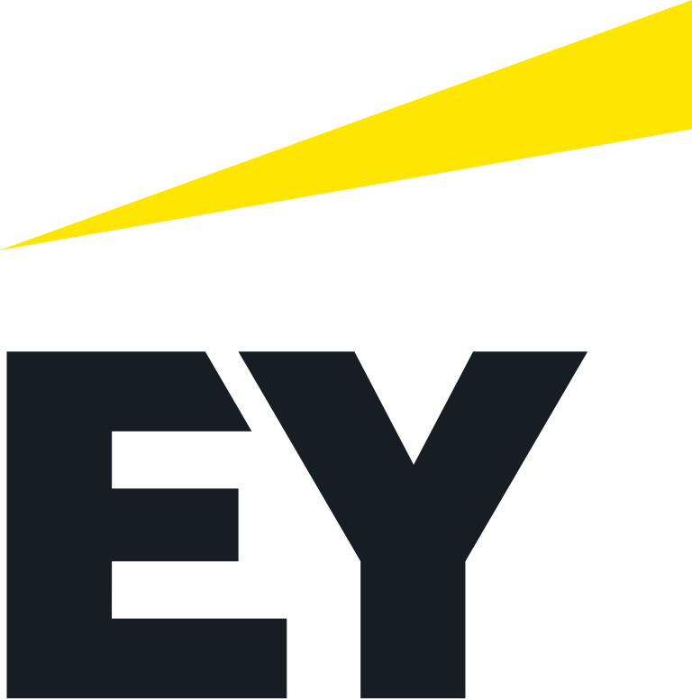
Senior Consultant – Software Engineering & Digital Engineering
EY, London, United Kingdom
• Leading end-to-end technology and ML-driven digital transformation initiatives, modernising client systems while ensuring alignment with business goals, regulatory requirements, and EY quality standards.
• Delivered data-driven insights, risk analytics, and scalable engineering solutions, translating complex technical concepts into clear business value while strengthening relationships with senior stakeholders.
• Enabled high-performance cross-functional teams, mentoring colleagues, driving collaboration, and identifying opportunities for automation, process optimisation, and adoption of emerging technologies.
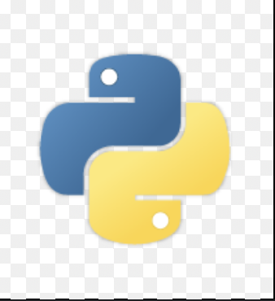Python
SQL
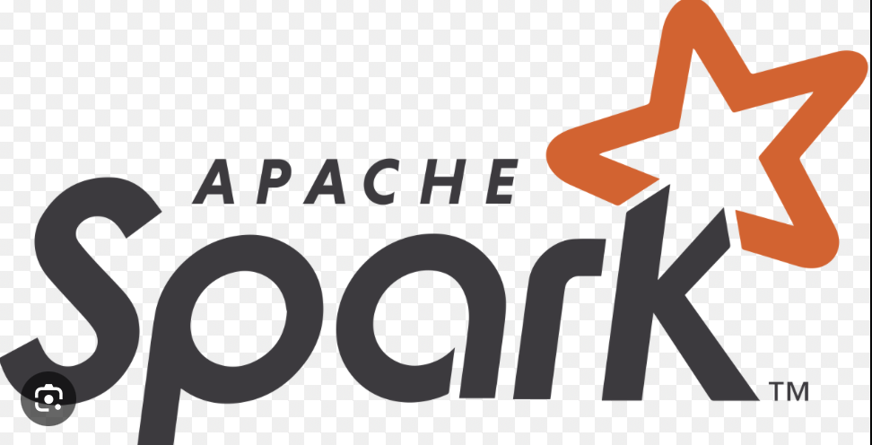Apache Spark
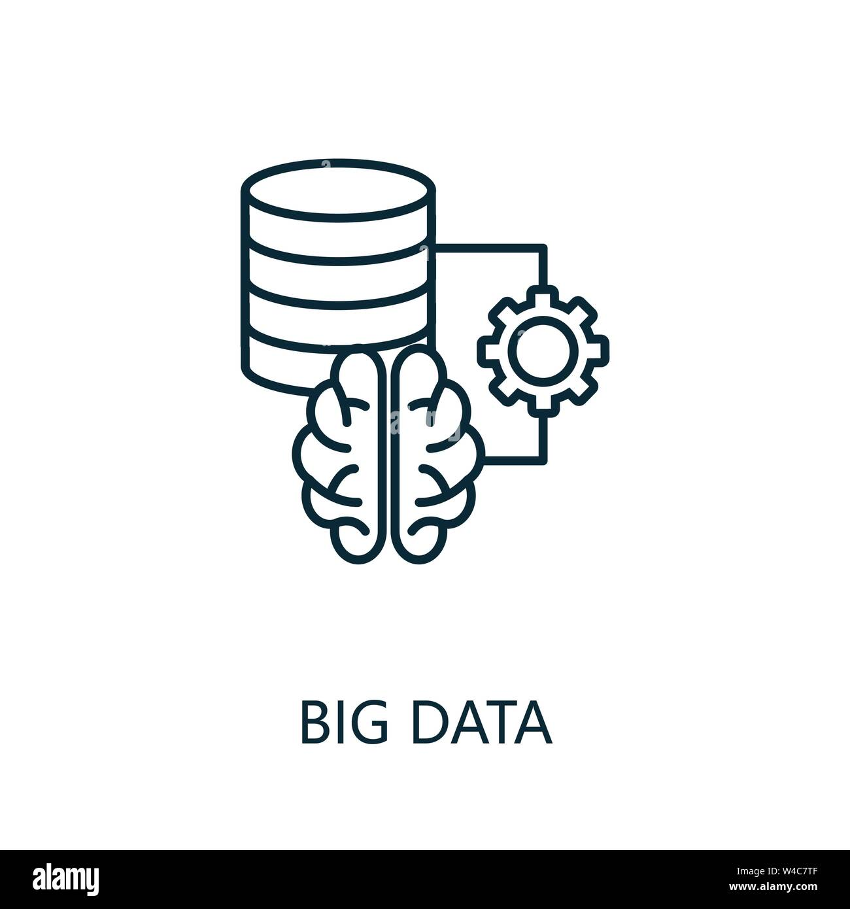Big Data
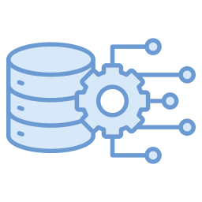Data Engineering
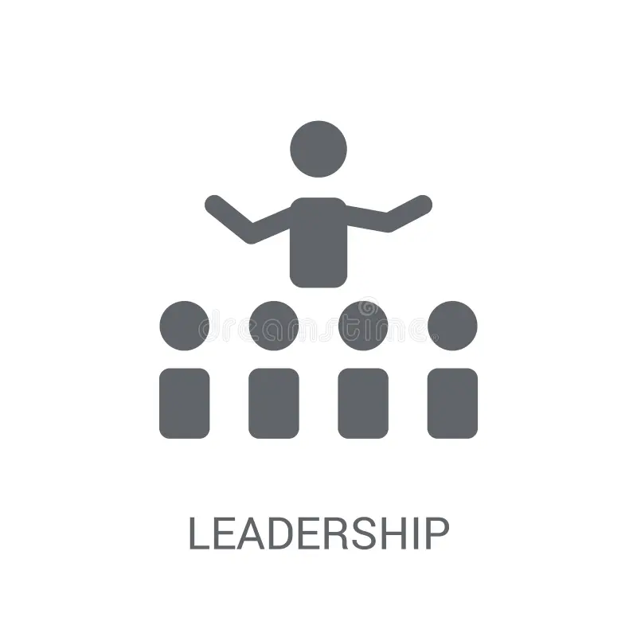Leadership
 Large-Scale Development
Large-Scale Development
Jun 2025
-
Present
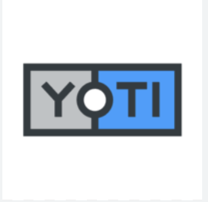
Research And Development Intern
Yoti Ltd, London, United Kingdom
• Testing of anti-spoofing models, focusing on trends in successful and failed attacks.
• Evaluating age-estimation models with attention to fairness and confounding variables.
• Active participation in R&D brainstorming and model troubleshooting sessions.
• Developed systems to ensure repeatability of experiments.
Nov 2024
-
Present
Online Events Assistant (Student Ambassador)
King’s College London, London, United Kingdom
• Supported online event delivery, managing content streaming and live Q&A sessions.
• Acted as a student panelist, sharing insights to aid prospective students' decisions.
Jan 2024
-
Jul 2024
Digital | Big Data Developer
Tata Consultancy Services (TCS) – Standard Chartered Bank
• Automated sensitive data masking with Python and streamlined table loading using Shell scripts.
• Boosted project revenue by 18% through efficient data privacy solutions.
Python
Spark
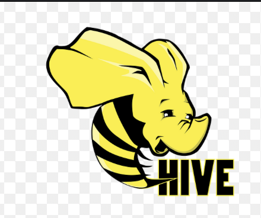Hive
SQL
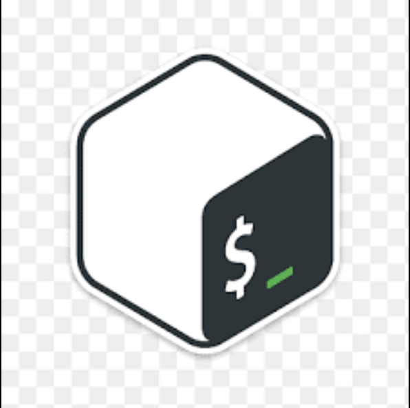Shell Script
Jul 2022
-
Jan 2024
Digital | Big Data Test Developer
Tata Consultancy Services (TCS) – VISA
• Migrated Hawkeye and Atscale applications to TRE, reducing risk and improving efficiency.
• Helped save ~$10M in credit risk and 9% in time/resources.
Jan 2022
-
Jun 2022

Digital Solutions Centre of Automation Intern
AB Inbev, Bangalore, India
• Migrated 5 automation apps to Blue Prism, saving ~$1,000 per app and increasing revenue.
• Delivered SAP and Excel automation saving $10,000 and 4 hours of operations time.
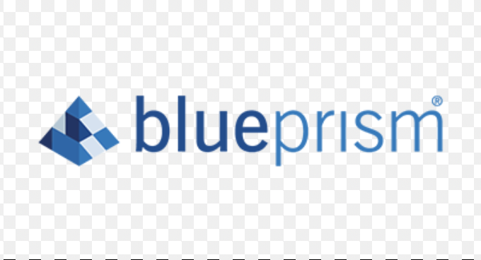Blue Prism
Automation Anywhere
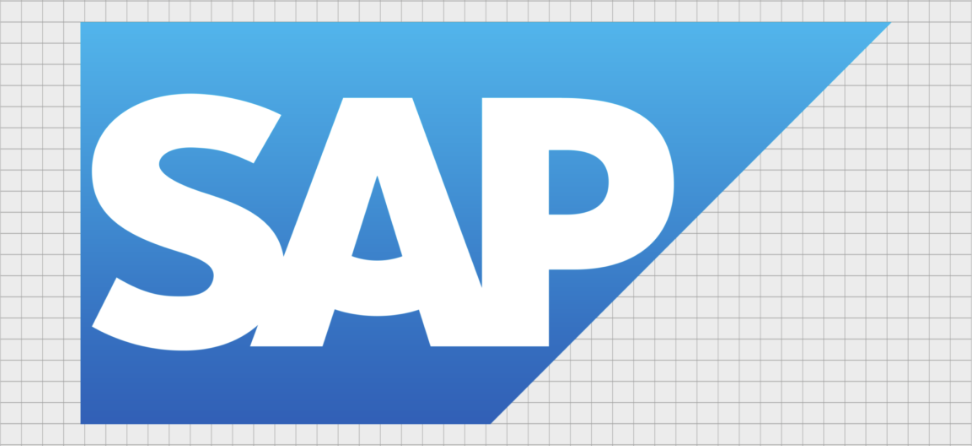SAP
Excel Macros